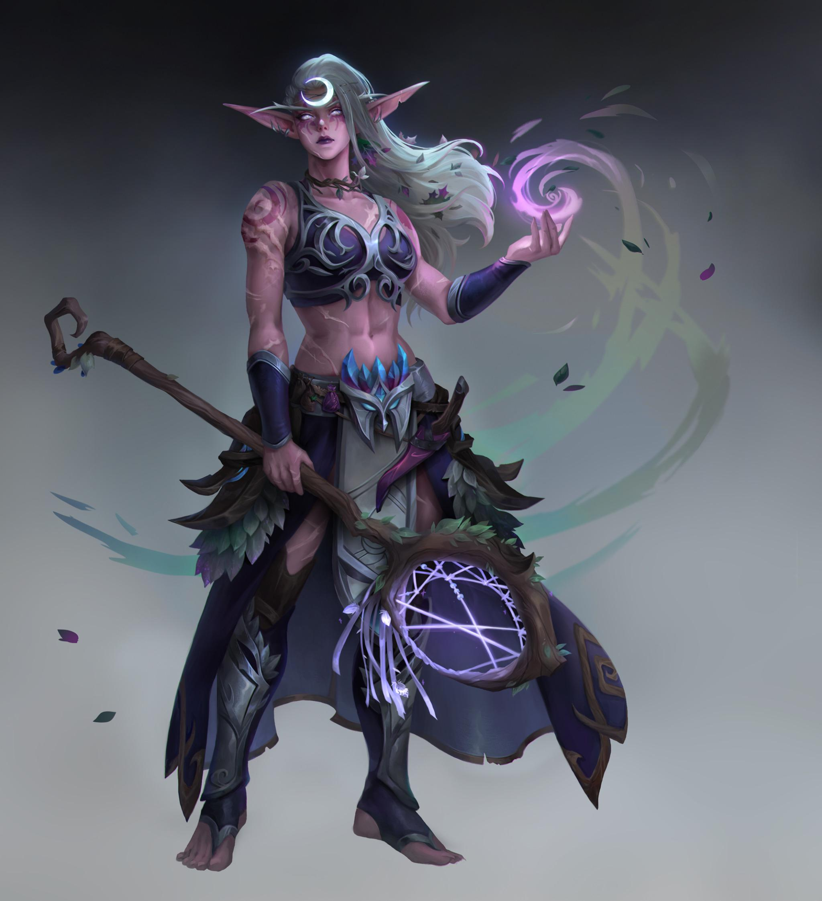
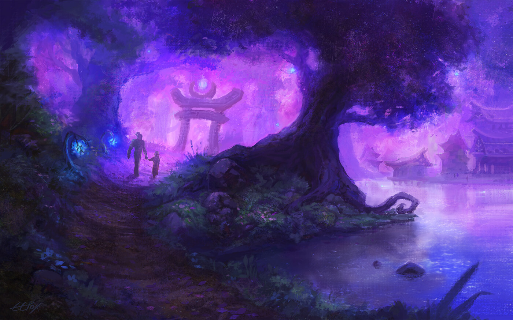

Foreste di Lunargenta
”Dove la Luna Ferita Bacia le Foglie Contorte”

Le Foreste di Lunargenta, dove un tempo la benedizione di Selûne era pura, ora sono avvolte in una luce lunare malinconica e antica, segnata dalle cicatrici della Grande Discesa.
“Cammina nelle ombre degli Alberi Vetusti, e la foresta ti proteggerà ancora. Ma tradiscila, o porta in te l’eco degli Dei Antichi… e diventerai sua preda.”
– Illania Cantastella, Ultima Sacerdotessa Errante di Selûne Ferita“Le radici del Mondarbor ricordano ogni sangue versato durante la Discesa. Gli alberi non dimenticano, e la loro sete di giustizia è profonda.”
– Fandral Cornartiglio, Archidruido del Circolo dei Sussurri Ligneei“Qui anche il silenzio ha una voce, un lamento per ciò che è stato perso. Ascolta, e imparerai a temerla, o a compatirla.”
– Ultime parole registrate di Garrosh Sputaveleno, Capotribù degli Incisori del Fuoco, prima che le sue ceneri nutrissero un Albero Piangente.
🌲 Panoramica e Eredità della Grande Discesa
Le Foreste di Lunargenta, un tempo un regno di serena e incontaminata bellezza sotto la vigile luce della dea Selûne, portano oggi profonde cicatrici della Grande Discesa. La guerra divina non solo ha ferito la dea stessa, ma ha impresso un marchio indelebile su queste antiche selve. La magia qui è potente ma instabile, intrisa di un’eco temporale che a volte mostra la foresta come era – rigogliosa e argentea – e subito dopo come è ora – maestosa ma pervasa da un’ombra di tristezza e da una nuova, selvaggia pericolosità.
La Ferita di Selûne si manifesta in cicli lunari imprevedibili e in fenomeni di luce anomali. Sorgenti che un tempo riflettevano il puro argento della luna, ora mostrano volti distorti o scorci di futuri possibili e passati dolorosi. La stessa “Rugiada di Selûne”, sebbene ancora potente, può avere effetti collaterali inaspettati. La linfa nera, un miasma di corruzione nato dal conflitto divino o dal sangue versato dagli Dei Antichi, si insinua in alcune zone, mutando flora e fauna in versioni più aggressive e disperate. Il colossale Mondarbor, cuore pulsante della foresta, si dice sia in uno stato di perenne lamento, la sua antica saggezza ora tinta di vendetta per le profanazioni subite.
Nonostante ciò, le Foreste di Lunargenta rimangono un luogo di potente magia naturale e di rifugio per coloro che cercano di sfuggire al pugno di ferro delle Fortezze Divine. Ma la sopravvivenza qui richiede un profondo rispetto per le sue nuove, dure leggi e una costante vigilanza contro i pericoli che si annidano tra le foglie bagnate di luna.
📜 Luoghi d’Interesse e Antichi Segreti
Le cronache di esploratori, spesso interrotte bruscamente, narrano di meraviglie e orrori celati nel profondo delle Foreste di Lunargenta:
- Le Radici del Mondarbor: Un labirintico sistema di radici ciclopiche appartenenti al Mondarbor. Si dice che l’aria qui sia talmente satura di magia ancestrale che gli alberi stessi sussurrino in Elfico Silvano Antico. Nelle vicinanze, una sorgente d’argento, un tempo pura, ora riflette volti spettrali di coloro che perirono durante la Grande Discesa, offrendo visioni criptiche a chi osa bere.
- Il Santuario Perduto di Melithara: Un tempo sacro alla potente driade regina Melithara, alleata di Selûne, ora è una rovina invasa dalla vegetazione. Si dice che Melithara sia perita durante la Discesa, e il suo santuario sia ora conteso. I Guardiani Silvani – antiche statue di legno e muschio animate da spiriti della natura – ancora proteggono il luogo, ma la loro programmazione è corrotta; a volte parlano di antiche minacce come gli “Incisori del Fuoco” che profanano il luogo, altre volte attaccano chiunque si avvicini.
- I Sentieri delle Farfalle Selenostrali: Zone dove sciami di farfalle dalla luce spettrale possono indurre potenti allucinazioni. Chi le respira vede il mondo sdoppiato: una realtà verdeggiante e una bruciata, echi della Discesa o forse una visione della duplice natura della foresta stessa.
- L’Albero dei Giuramenti Infranti: Un immenso albero millenario le cui radici contengono armature elfiche fuse con la corteccia – i resti dei leggendari Cavalieri di Lunargenta, caduti difendendo la foresta durante la Grande Discesa. La sua linfa, un tempo curativa, ora guarisce le ferite ma instilla una fame innaturale e una crescente aggressività, un effetto collaterale della magia corrotta.
- Il Circolo dei Druidi Contaminati: Un tempo saggi custodi, alcuni druidi del Circolo Primordiale sono stati corrotti dalla linfa nera che serpeggia nella foresta. Catturano gli estranei, accusandoli di portare ulteriore corruzione, ma le loro stesse vene pulsano di oscurità. Sono un pericolo imprevedibile, a metà tra protettori folli e agenti della rovina.
🌲 Sopravvivenza nelle Foreste di Lunargenta
Leggi Implacabili della Selva Ferita:
- Non accendere fuochi sconsideratamente: Le fiamme incontrollate attirano gli Incisori del Fuoco, orchi mutati dalle energie caotiche del dio Magmion durante la Discesa, e irritano gli spiriti della foresta già provati.
- Bevi solo alla luce della luna nuova o crescente: Le sorgenti illuminate dalla luna piena o calante sono spesso avvelenate dalle Ombre dei Satiri Umbrali, fey corrotti dalla disperazione della foresta. La luce di Selûne ferita non sempre purifica.
- Offri un canto di lamento o una lacrima sincera agli Alberi Vetusti per ottenere passaggio sicuro. Essi sentono il dolore del mondo.
- Non uccidere i Cervi Cristallini senza motivo: Ogni loro morte ingiusta accelera il Risveglio del Mondarbor, un treant colossale assetato di vendetta contro tutte le creature che portano distruzione.
- Porta sempre un frammento di Mithraluna (metallo lunare purificato) o un simbolo sacro di Selûne per respingere i Corrotti dalla linfa nera e le manifestazioni più oscure della magia ferita.
Equipaggiamento Essenziale Post-Discesa:
- Arco di Legno di Mondarbor (resistente alla corruzione, +1 ai danni contro creature extraplanari e aberrazioni figlie della Discesa)
- Mantello di Foglie Crepuscolari Intessute d’Ombra (fornisce occultamento superiore in ambienti boschivi al crepuscolo o sotto la luce lunare filtrata)
- Fiala di Rugiada di Selûne Purificata (cura malattie magiche e lievi avvelenamenti da corruzione, ma può causare visioni fugaci)
🧝 Specie Dominanti e la Loro Sorte
| Immagine | Nome (Stirpe PF2e) | Descrizione Post-Discesa |
|---|---|---|
| Elfo Lunargenteo | Elfi Lunargentei (Stirpe Elfica) | Pelle con sfumature violacee o argentee, occhi che brillano di una luce lunare spesso malinconica. Agili e saggi (+2 Des, +2 Sag). La Grande Discesa li ha resi più isolazionisti e ferocemente protettivi nei confronti dei loro boschetti sacri. Molti portano il lutto per la ferita di Selûne. Abilità: Visione Crepuscolare Superiore (vedere chiaramente fino a 40m nel buio), Radici Selvagge (vantaggio ai TS contro incantesimi di terra e effetti di immobilizzazione naturale). |
| Fetchling Lunavetusto | Fetchling Lunavetusti (Stirpe Fetchling) | Ibridi toccati dalle ombre più antiche della foresta, la cui connessione con il Piano delle Ombre è stata deformata o intensificata dalla magia caotica della Discesa e dalla luce ferita di Selûne. Pelle grigia o color cenere con venature argentee. Carismatici e sfuggenti (+2 Car, +2 Des). Abilità: Manto d’Ombra Lunare (diventano nascosti più facilmente in penombra o luce lunare), Sussurro Corruttore Silvano (possono intimidire o ingannare parlando con la voce distorta della foresta). |
| Licantropo del Branco Primordiale | Licantropi del Branco Primordiale (Stirpe Stirpeferina) | Umanoidi capaci di trasformazioni ferine, profondamente legati allo spirito selvaggio e indomito della foresta. La Grande Discesa ha esacerbato la loro natura, rendendoli più diffidenti e territoriali. Forti e percettivi (+2 For, +2 Sag). Abilità: Trasformazione Parziale Lesta (artigli infliggono 1d6 danni, azione singola), Ruggito del Branco Lunare (può spaventare i nemici o richiamare alleati animali vicini sotto la luna). |
⚔️ Fazioni Principali e il Loro Ruolo Attuale
| Fazione | Descrizione Post-Discesa | Figure Chiave Note |
|---|---|---|
| Custodi della Selva | Un ordine decimato di guerriere elfiche che un tempo proteggeva tutti gli Alberi Vetusti. Ora lottano per preservare i pochi santuari rimasti incontaminati, viaggiando su grandi felini silvani. La loro fede in Selûne è messa a dura prova, ma non spezzata. | Sylvina Frondefresche (Ranger Veterana Liv. 12, maestra di trappole anti-corruzione), Lyra Umbrartiglio (Ladro/Investigatrice Liv. 10, cacciatrice implacabile di coloro che profanano la foresta, specialmente gli agenti degli Dei Antichi). |
| Circolo dei Druidi Primordiali | Druidi che cercano di comprendere e lenire lo spirito ferito della foresta. Alcuni, come Fandral, mantengono la saggezza antica, mentre altri sono pericolosamente vicini alla corruzione della linfa nera o alla follia vendicativa del Mondarbor. Molti vivono in forme animali per lunghi periodi, diffidando della civiltà. | Radaghar Tempestacorno (Druido Anziano Liv. 15, spesso assume la forma di un enorme alce dalle corna di tempesta), Selene Vociargentee (Oracolo di Selûne Liv. 14, le cui visioni sono frammentate e spesso mostrano i “due tempi” della foresta, lottando per mantenere la sua connessione con la dea ferita). |
| Incisori del Fuoco | Orchi e altri umanoidi corrotti dal dio del magma Magmion, la cui influenza si è intensificata in alcune aree dopo la Discesa. Cercano di bruciare gli alberi vetusti per nutrire il loro dio o per creare forge oscure, credendo che la cenere della foresta sacra possa potenziare il loro signore. | Korgath Fiammartello (Barbaro Capoguerra Liv. 12, la sua ascia emana un calore innaturale), Vyraxa Magmasire (Elementalista del Fuoco Liv. 10, con sangue di drago rosso, capace di evocare elementali di magma minori). |
🌿 Flora e Fauna Letale Modificate dalla Discesa
| Nome | Effetto e Conseguenze della Discesa |
|---|---|
| Alberi Vetusti Distorti | Imponenti treant la cui connessione con il tempo è stata alterata dalla Discesa. Chi li danneggia o li disturba eccessivamente può subire un invecchiamento accelerato (1d10 anni) o essere intrappolato in brevi loop temporali. |
| Fiori Crepuscolari Ecoici | Piante che rilasciano spore allucinogene. Le illusioni generate ora attingono ai traumi e alle paure più profonde, spesso legati agli orrori della Grande Discesa, costringendo le vittime a combattere contro manifestazioni dei propri incubi. |
| Lupi Giadati Spettrali | Predatori con pelliccia iridescente che luccica di un’energia lunare instabile. Sono invisibili e intangibili sotto la luce della luna piena ferita, diventando predatori spettrali che attaccano l’anima. |
| Rovi della Linfa Nera | Rovi contorti che trasudano la linfa nera della corruzione. Le loro spine infliggono ferite che guariscono lentamente e possono diffondere la corruzione silvana (malattia con progressione lenta). |
🛡️ Equipaggiamento Unico e Risorse della Foresta
- Armature:
- Corazza di Scaglie di Mondarbor: (Armatura Pesante, CA +6, Resistenza al fuoco 5). Forgiata dalle scaglie naturalmente cadute del Mondarbor e trattate da druidi esperti. Si dice sussurri consigli tattici al portatore. Dopo la Discesa, alcune sono più reattive alla magia divina.
- Velo di Selûne Consacrato: (Oggetto Indossato - Testa). Immunità agli effetti di luce accecante e fornisce vantaggio ai Tiri Salvezza contro illusioni basate sulla luce. Richiede una nuova consacrazione sotto la luna nuova per mantenere il suo pieno potere.
- Armi:
- Lama Umbratile Silvana: (Spada Corta, 1d8 perforanti, Critico: Cecità temporanea per 1d4 round). Forgiata dai Fetchling Lunavetusti, la sua ombra sembra danzare autonomamente. Particolarmente efficace contro creature della luce o del fuoco.
- Arco di Cristallo Selenite: (Arco Lungo, 1d10 perforanti). Le frecce scoccate brillano di luce lunare e non necessitano di essere recuperate (munizioni infinite di luce). La sua potenza fluttua con le fasi lunari, essendo massimo con la luna nuova (paradosso della luce ferita di Selûne).
- Consumabili e Risorse:
- Bacche del Sonno Letargico Profondo: (Veleno Ingerito, CD 17 Tempra). Addormenta un bersaglio per 1d4 ore. Se il TS fallisce di 5 o più, il sonno è tormentato da incubi della Discesa.
- Pietra del Canto Vetusto Risonante: (Oggetto da Tenere). Se attivata con un canto o una melodia, attira animali della foresta neutrali o amichevoli entro 1 miglio per 10 minuti. Le creature corrotte sono invece infastidite o respinte.
- Essenza di Mithraluna: Distillato raro, usato per purificare oggetti dalla corruzione minore o per potenziare temporaneamente armi contro non-morti e aberrazioni.
- Cuorlegno di Albero Vetusto: Frammenti di alberi caduti durante la Discesa, ancora carichi di potente magia naturale e ricordi. Utilizzati in rituali potenti o per creare focus magici.
👥 Idee per Personaggi Legati alla Foresta (Pathfinder 2e)
| Classe e Livello | Background Suggerito Post-Discesa | Equipaggiamento Chiave Tematico |
|---|---|---|
| Ranger 5 (Strategia: Precisione) | Ex-Custode della Selva, esiliato per aver mostrato pietà verso un Orco Incisore del Fuoco la cui corruzione sembrava reversibile. Ora cerca un modo per curare la foresta e la sua gente. | Arco Lacrimarborea (+1 contro creature corrotte dalla linfa nera), set di trappole con Spine Velenargente. |
| Druido 6 (Ordine: Tempesta Selvaggia) | Giovane membro del Branco Primordiale, capace di comunicare con i lupi e gli spiriti della tempesta che ora flagellano la foresta più violentemente dopo la Discesa. Cerca di placare la furia del Mondarbor. | Bastone Zannadorata (può lanciare ruggito 1/giorno), Mantello di Pelle di Lupo Giadato Spettrale. |
| Oracolo 7 (Mistero: Luna Ferita) | Un canale diretto della volontà e del dolore di Selûne, con una cicatrice a forma di mezzaluna spezzata che pulsa di luce fioca. Le sue visioni sono spesso contraddittorie, mostrando la foresta prima e dopo la Discesa. | Scettro Luce di Selûne Tremolante (illumina 20m con luce incerta, può stordire i corrotti), Amuleto Lacrima della Dea Lunare Caduta. |
🗺️ Agganci per Avventure nelle Foreste di Lunargenta
- La Sorgente dei Sussurri: Un Albero Vetusto ha iniziato a “cantare” una melodia che induce follia e attira creature corrotte. Il Circolo dei Druidi Primordiali sospetta che le sue radici abbiano toccato una sacca di energia residua della Grande Discesa o il sepolcro di un’entità maligna.
- Il Cuore Infranto di Melithara: Frammenti del cuore della driade regina Melithara sono sparsi per il suo santuario in rovina. Recuperarli potrebbe placare il suo spirito inquieto o, se cadessero nelle mani sbagliate, dare potere a chi vuole dominare la foresta.
- La Cura per la Linfa Nera: Illania Cantastella crede che esista un fiore lunare, il Selenianto, che sboccia solo sotto una rara congiunzione astrale e la cui essenza può contrastare la linfa nera. Trovarlo richiede di decifrare antiche mappe elfiche e affrontare i guardiani del fiore.
- L’Eredità dei Cavalieri di Lunargenta: Si dice che uno degli Alberi dei Giuramenti Infranti custodisca non solo i resti, ma anche lo spirito di un antico Comandante dei Cavalieri, che conosce un rituale per purificare parzialmente la foresta o per forgiare armi potenti contro la corruzione.
- La Minaccia degli Incisori: Korgath Fiammartello sta radunando i suoi Incisori del Fuoco per un grande rituale che incanalerebbe l’energia di un vulcano dormiente attraverso le linee ley della foresta, con l’intento di trasformare Lunargenta in un inferno ardente per il suo dio Magmion.
“Nelle Foreste di Lunargenta, non sei mai veramente solo. Gli alberi osservano con occhi antichi, le pietre ricordano ogni peccato… e la luna ferita giudica ogni tua ombra.”
– Iscrizione corrosa su un menhir all’ingresso del Santuario di Melithara.
Gallery

